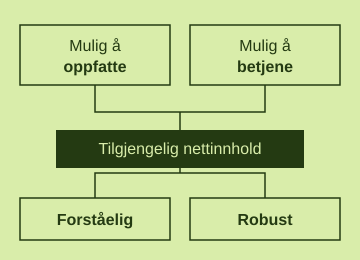

1. Hva menes med universell utforming, og hva står WCAG for?
Gjør dette etterpå, gidder ikke å svare nå, må gjøre research og sånt
Web Content Accessibility Guidelines (WCAG) er et sett med retningslinjer for å gjøre nettsider og nettinnhold tilgjengelig for alle. Det bygger på universell utforming, som betyr å utforme produkter, miljøer og tjenester slik at alle kan bruke dem i størst mulig grad.
